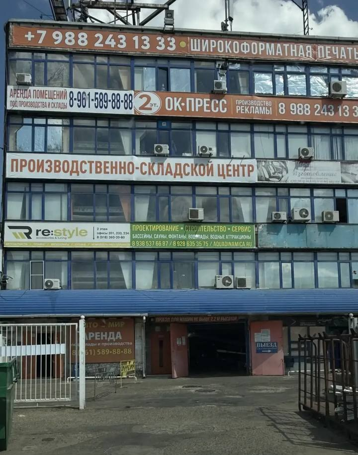
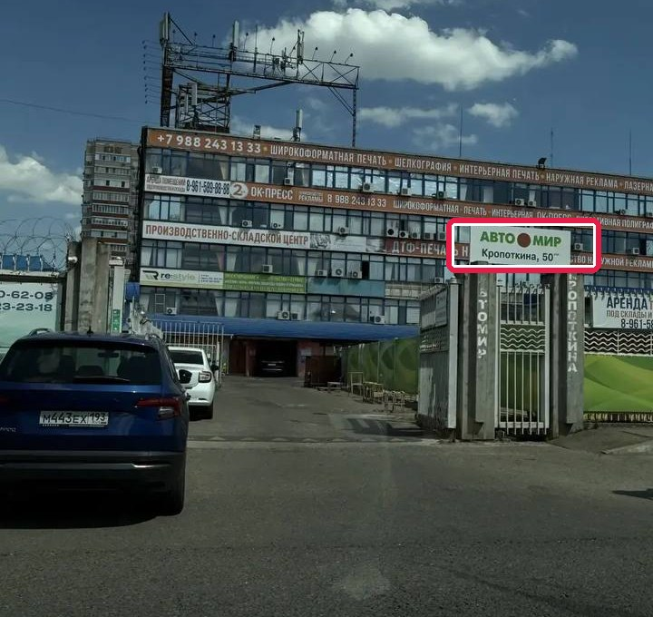

Уважаемый клиент! Благодарим за обращение. Здесь — всё, что нужно знать перед визитом и о том, как пройдёт восстановление вашего автомобиля.


В документах страховой может быть указан другой адрес — это нормально. Осмотр и ремонт проводятся именно по нашему адресу: ул. Кропоткина, 50.
Это важно для качественной фиксации всех повреждений. Грязный автомобиль осматривать нельзя — придётся перенести запись.
После того как специалисты проведут осмотр и зафиксируют повреждения:
| Этап | Что происходит | Срок |
|---|---|---|
| Осмотр | Специалисты фиксируют все вмятины от града, составляют дефектовочный лист с перечнем повреждённых элементов | В день приезда, длительность ≈ 1,5 часа |
| Передача документов | Все документы передаются в вашу страховую компанию для согласования ремонта | 1–2 рабочих дня после осмотра |
| Ожидание согласования | Страховая рассматривает документы и принимает решение | Зависит от страховой — около 5–7 дней |
| Запись на ремонт | После согласования мы свяжемся с вами и предложим удобные даты | Сразу после согласования — примерно 2 недели с момента осмотра |
| Ремонт | Непосредственно восстановление автомобиля | Зависит от объёма: от 3 часов до 2 суток |
| Выдача | Вы принимаете автомобиль, проверяете качество и подписываете акт приёма-передачи | По завершении ремонта |
Мы не можем начать ремонт до получения официального согласования от страховой. Все вопросы по срокам согласования — в компетенции вашей страховой компании.
Обязательно предупредите нас по телефону. Мы подождём до 30 минут при условии, что вы предупредили. Если опоздание больше 30 минут — придётся перенести запись на другой день, чтобы не срывать график остальных клиентов.
Сообщите заранее — лучше за день или хотя бы за несколько часов. Мы перенесём вас на другое удобное время и предложим освободившееся окно другому клиенту.
Если вы не предупредили и не приехали, мы:
Понимаем, что вы можете быть заняты. Если не дозвонимся с первого раза, мы:
Осмотр грязного автомобиля не проводится — мы не сможем качественно зафиксировать повреждения, а это важно для страховой. Если приедете на грязной машине: по возможности подождём и осмотрим позже в тот же день; если время не позволяет — перенесём запись. Пожалуйста, приезжайте на чистом автомобиле!
Кто вы и почему я должен приехать именно к вам?
Мы — партнёр вашей страховой компании. Страховая направила ваш автомобиль к нам для осмотра и ремонта. Мы работаем напрямую со страховой: все документы передаём им, вам не нужно заниматься этим самостоятельно.
Сколько будет стоить ремонт?
Стоимость согласовывается со страховой. Вы не оплачиваете ремонт напрямую — все расчёты проходят через страховую. Вопросы по стоимости — в вашу страховую компанию. Исключение — случаи оплаты по франшизе.
Когда мне позвонят? Когда начнётся ремонт?
После осмотра мы передаём документы в страховую. Как только поступит согласование — сразу свяжемся с вами и предложим даты ремонта. Срок согласования зависит от страховой, повлиять на него мы не можем.
Сколько ждать согласования от страховой?
Зависит от вашей страховой и загруженности их специалистов. Как только получаем согласование — сразу звоним. Уточнить статус можно напрямую в своей страховой.
Можно приехать раньше, если освободится окно?
Да! Сообщите об этом менеджеру при записи — если появится свободное время, мы перезвоним и предложим приехать раньше.
Почему в документах страховой указан другой адрес?
Там может быть юридический адрес или адрес другого подразделения. Осмотр и ремонт — по нашему фактическому адресу: ул. Кропоткина, 50. Это нормальная практика, не переживайте.
Можно присутствовать при осмотре или ремонте?
Да. При осмотре специалисты покажут все повреждения и ответят на вопросы по автомобилю. По техническим вопросам ремонта тоже можно получить консультацию на месте.
Что делать, если не могу найти ваш адрес?
Позвоните нам — сориентируем. Также можно воспользоваться ссылкой на карты (страница 1).